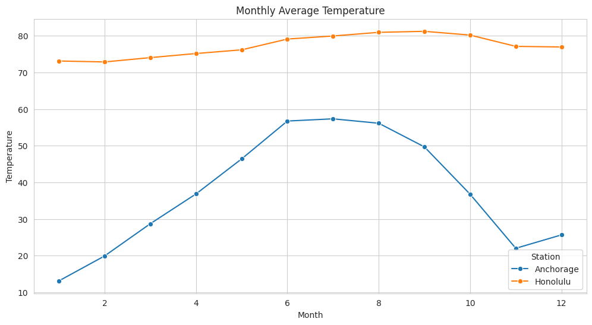
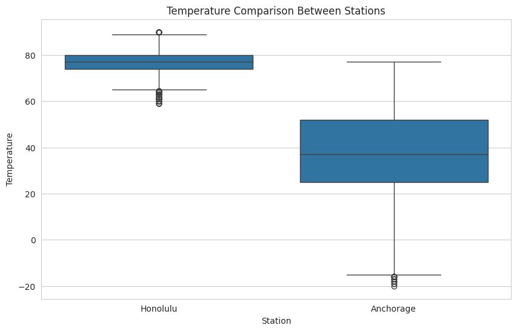
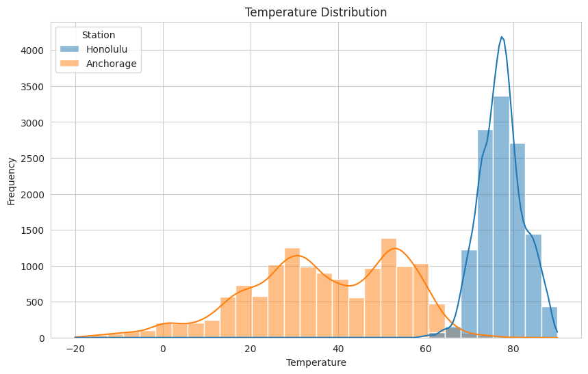
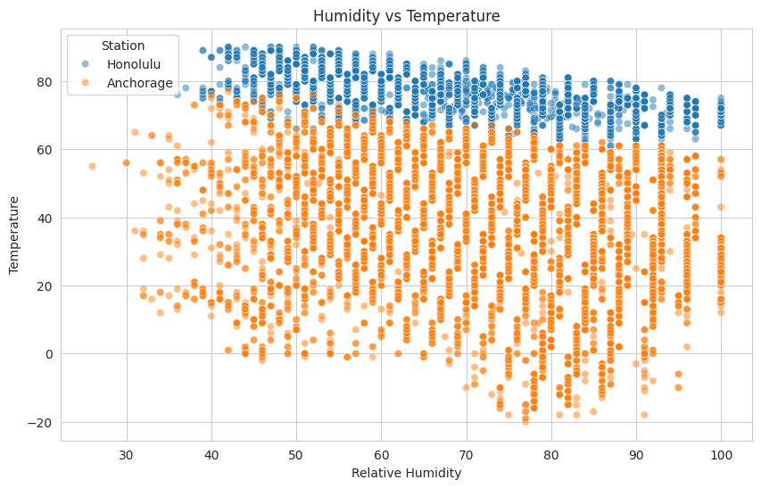
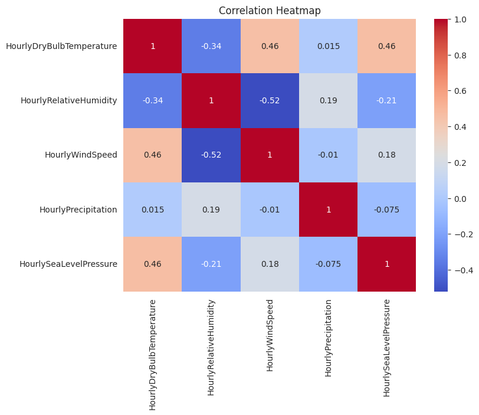
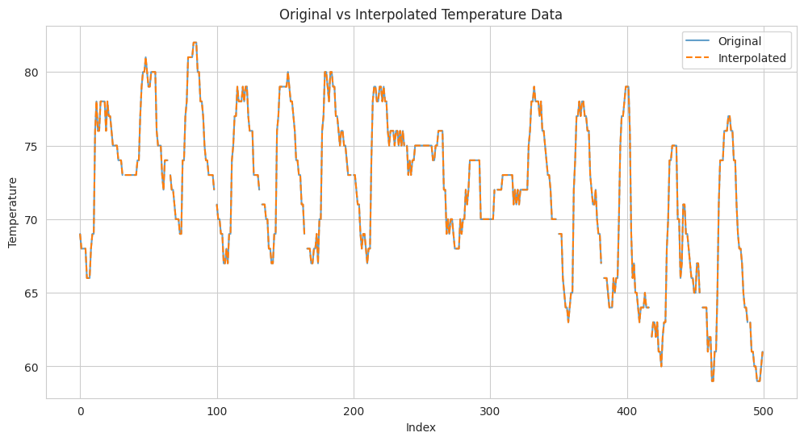

Analysis of real-world NOAA weather data using Python, numerical methods, statistical analysis, interpolation, and data visualization.
This project analyzes real-world meteorological data collected by the National Oceanic and Atmospheric Administration (NOAA). The analysis focuses on hourly weather observations from two geographically different locations during 2024.
The main objective was to apply numerical analysis techniques, statistical methods, data cleaning, interpolation, and visualization to a real scientific dataset.
To investigate temperature, humidity, wind speed, precipitation, and sea level pressure using Python-based numerical and statistical analysis techniques.
The dataset consists of 2024 NOAA Local Climatological Data collected from two airport weather stations:
The analysis followed a structured data-processing workflow. The raw NOAA data were loaded into Python, cleaned, transformed, analyzed, and visualized.
The NOAA CSV files were loaded using the Pandas library. Column names were cleaned to remove unnecessary whitespace.
Only the variables required for the numerical analysis were selected from the original datasets.
The DATE column was converted into datetime format. Additional Month and Hour variables were generated. A Station variable was also added to distinguish Honolulu from Anchorage.
Numerical weather variables were converted using
pd.to_numeric().
Invalid entries were treated as missing values.
Missing numerical values were handled using linear interpolation.
Monthly averages, distributions, relationships between variables, and correlation coefficients were investigated.
Matplotlib and Seaborn were used to generate graphs for interpreting the numerical results.
The combined dataset provided a clear contrast between the climatic characteristics of Honolulu and Anchorage.
Honolulu showed relatively stable warm temperatures throughout the year, while Anchorage displayed strong seasonal variation, with substantially colder winter temperatures and warmer summer conditions.

The monthly average temperature illustrates the strong seasonal difference between Honolulu and Anchorage. Honolulu remains comparatively stable, whereas Anchorage experiences pronounced seasonal changes.

The temperature distributions of the two stations show the climatic differences between the locations. Anchorage has a much wider temperature range than Honolulu.

The histogram demonstrates how temperature observations are distributed throughout the dataset. Honolulu has a more concentrated distribution, while Anchorage covers a broader range of temperatures.

The scatter plot shows the relationship between relative humidity and temperature. The overall relationship is negative, indicating that higher temperatures are generally associated with lower relative humidity in this dataset.

The correlation matrix provides a numerical overview of the relationships between the selected weather variables. Temperature and relative humidity show a negative correlation of approximately -0.34, while wind speed and relative humidity show a stronger negative relationship of approximately -0.52.
The complete Python implementation used for the numerical analysis is available below.
The script contains the data loading, preparation, statistical analysis, interpolation, visualization, and output procedures.
View weather_analysis.py →
import pandas as pd
import numpy as np
hawaii = pd.read_csv(
"Hawaii_Honolulu_2024.csv",
low_memory=False
)
alaska = pd.read_csv(
"Alaska_Anchorage_2024.csv",
low_memory=False
)
hawaii.columns = hawaii.columns.str.strip()
alaska.columns = alaska.columns.str.strip()
selected_columns = [
"DATE",
"HourlyDryBulbTemperature",
"HourlyRelativeHumidity",
"HourlyWindSpeed",
"HourlyPrecipitation",
"HourlySeaLevelPressure"
]
hawaii_selected = hawaii[selected_columns].copy()
alaska_selected = alaska[selected_columns].copy()
hawaii_selected["Station"] = "Honolulu"
alaska_selected["Station"] = "Anchorage"
combined_df = pd.concat(
[hawaii_selected, alaska_selected],
ignore_index=True
)
numeric_columns = [
"HourlyDryBulbTemperature",
"HourlyRelativeHumidity",
"HourlyWindSpeed",
"HourlyPrecipitation",
"HourlySeaLevelPressure"
]
for col in numeric_columns:
combined_df[col] = pd.to_numeric(
combined_df[col],
errors="coerce"
)
monthly_temp = (
weather
.groupby(
["Month", "Station"]
)["HourlyDryBulbTemperature"]
.mean()
.reset_index()
)
plt.figure(figsize=(12, 6))
sns.lineplot(
data=monthly_temp,
x="Month",
y="HourlyDryBulbTemperature",
hue="Station",
marker="o"
)
plt.title("Monthly Average Temperature")
plt.xlabel("Month")
plt.ylabel("Temperature")
plt.show()
plt.figure(figsize=(10, 6))
sns.boxplot(
data=weather,
x="Station",
y="HourlyDryBulbTemperature"
)
plt.title(
"Temperature Comparison Between Stations"
)
plt.xlabel("Station")
plt.ylabel("Temperature")
plt.show()
plt.figure(figsize=(10, 6))
sns.histplot(
data=weather,
x="HourlyDryBulbTemperature",
hue="Station",
kde=True,
bins=30
)
plt.title("Temperature Distribution")
plt.xlabel("Temperature")
plt.ylabel("Frequency")
plt.show()
plt.figure(figsize=(10, 6))
sns.scatterplot(
data=weather,
x="HourlyRelativeHumidity",
y="HourlyDryBulbTemperature",
hue="Station",
alpha=0.5
)
plt.title("Humidity vs Temperature")
plt.xlabel("Relative Humidity")
plt.ylabel("Temperature")
plt.show()
correlation = weather[numeric_columns].corr()
display(correlation)
plt.figure(figsize=(8, 6))
sns.heatmap(
correlation,
annot=True,
cmap="coolwarm"
)
plt.title("Correlation Heatmap")
plt.show()
original_temperature = (
combined_df[
"HourlyDryBulbTemperature"
].copy()
)
weather[numeric_columns] = (
weather[numeric_columns]
.interpolate(method="linear")
)
plt.figure(figsize=(12, 6))
plt.plot(
original_temperature[:500],
label="Original",
alpha=0.7
)
plt.plot(
combined_df[
"HourlyDryBulbTemperature"
][:500],
label="Interpolated",
linestyle="--"
)
plt.title(
"Original vs Interpolated Temperature Data"
)
plt.xlabel("Index")
plt.ylabel("Temperature")
plt.legend()
plt.show()
Missing numerical values were handled using linear interpolation. The purpose of interpolation was to estimate missing observations while preserving the overall trend of the dataset.

The interpolated values closely follow the original temperature trend. The interpolation fills missing observations without noticeably changing the overall structure of the dataset.
The analysis demonstrates how numerical analysis and statistical techniques can be applied to real-world meteorological data.
The comparison between Honolulu and Anchorage clearly demonstrates the effect of geographical location and seasonal variation on temperature patterns.
Honolulu maintained relatively stable temperatures throughout the year, while Anchorage showed significantly stronger seasonal variation.
The correlation analysis also revealed meaningful relationships between temperature, humidity, wind speed, precipitation, and sea level pressure.
Linear interpolation provided a practical method for handling missing numerical observations while preserving the general structure of the dataset.
This project demonstrates a complete scientific data analysis workflow, from raw NOAA data processing to numerical analysis, interpolation, statistical evaluation, and visualization using Python.